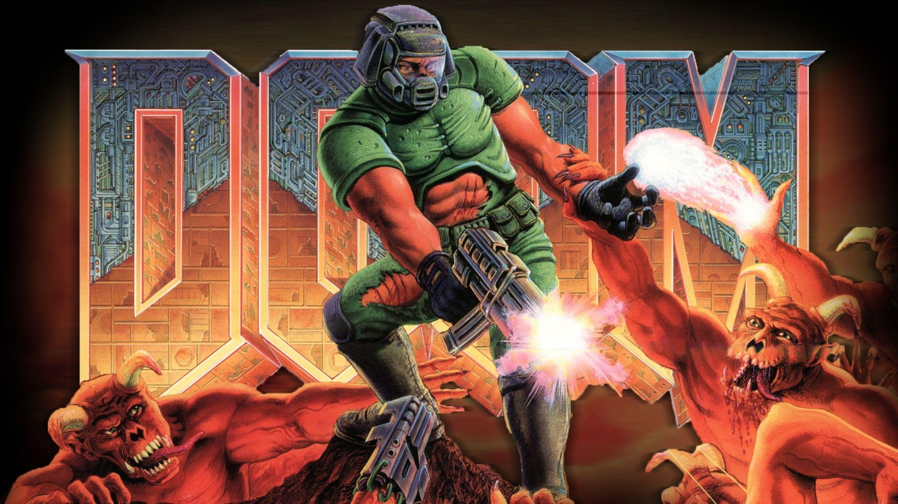

DOOM

Original Doom is a mobile version of the early nineties classic from ID Software, which allows you to enjoy everything you loved about the legendary game Doom using the little screen on your Android device. The application is really nothing more than an engine along with the shareware version of the game. That is, by default you will only be able to play the first episode of Doom. However, in order to access all of the content from Doom 1 and Doom 2 you just have to import the pertinent files from your computer to your device. Doom is a 1993 first-person shooter (FPS) game developed by id Software for MS-DOS. Players assume the role of a space marine, popularly known as Doomguy, fighting their way through hordes of invading demons from hell. Id began developing Doom after the release of their previous FPS, Wolfenstein 3D (1992). It emerged from a 3D game engine developed by John Carmack, who wanted to create a science fiction game inspired by Dungeons & Dragons and the films Evil Dead II and Aliens. The first episode, comprising nine levels, was distributed freely as shareware; the full game, with two further episodes, was sold via mail order. An updated version with an additional episode and more difficult levels, The Ultimate Doom, was released in 1995 and sold at retail. Doom is a first-person shooter presented with early 3D graphics. The player controls an unnamed space marine—later termed "Doomguy"—through a series of levels set in military bases on the moons of Mars and in hell. To finish a level, the player must traverse through the often labyrinthine area to reach a marked exit room. Levels are grouped together into named episodes, with the final level focusing on a boss fight with a particularly difficult enemy. While the environment is presented in a 3D perspective, the enemies and objects are instead 2D sprites presented from several preset viewing angles, a technique sometimes referred to as 2.5D graphics or billboarding. The main campaign mode is the single-player mode, in an episodic succession of missions. Two multiplayer modes are playable over a network: cooperative, in which two to four players team up to complete the main campaign, and deathmatch, in which two to four players compete to kill the other players' characters as many times as possible. Multiplayer was initially only playable over local networks, but a four-player online multiplayer mode was made available one year after launch through the DWANGO service. In "Knee-Deep in the Dead", the marine fights demons and possessed humans in the military and waste processing facilities on Phobos. The episode ends with the marine defeating two powerful Barons of Hell guarding a teleporter to the Deimos base. Emerging from the teleporter, he is overwhelmed and comes to with only a pistol again. In "The Shores of Hell", he fights on through Deimos research facilities that are corrupted with satanic architecture and kills a gigantic cyberdemon. From an overlook he discovers that the moon is floating above hell and rappels down to the surface. In "Inferno", the marine takes on hell itself and destroys a cybernetic spider-demon that masterminded the invasion of the moons. A portal to Earth opens and he steps through, only to find that Earth has also been invaded. "Thy Flesh Consumed" follows the marine's initial assault on the Earth invasion force, setting the stage for Doom II: Hell on Earth.
Download link:-https://play.google.com/store/apps/details?id=com.bethsoft.DOOM&hl=en_IN&gl=US
Home
previous page
Next page